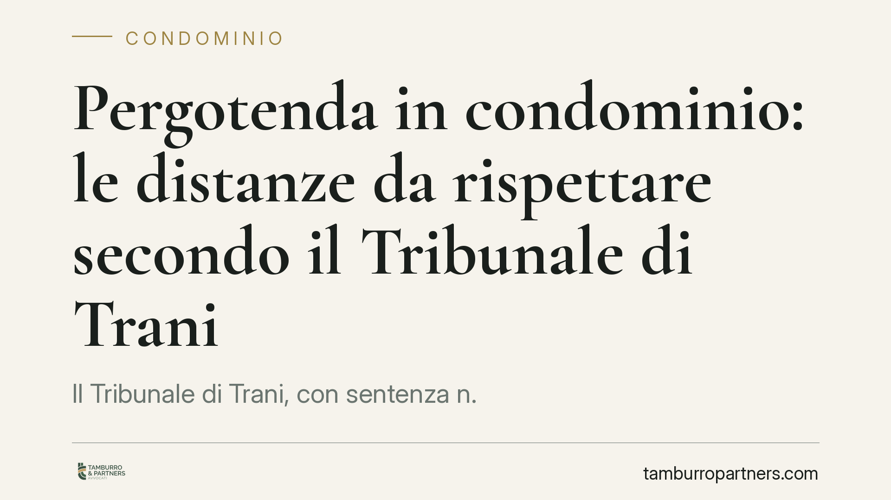

Pergotenda in condominio: le distanze da rispettare secondo il Tribunale di Trani
Il Tribunale di Trani, con sentenza n. 86/2026, chiarisce che una pergotenda installata in modo stabile deve rispettare le distanze previste dal codice civile a tutela del diritto di veduta del condomino. Non rileva la qualificazione come edilizia libera né il possesso di autorizzazioni amministrative: la disciplina civilistica opera su un piano autonomo.

Il caso
Un condomino installa una pergotenda sul proprio balcone o terrazzo. La struttura è conforme alla normativa edilizia, rientra nell'edilizia libera e non richiede particolari titoli amministrativi. Nonostante ciò, il vicino lamenta la lesione del proprio diritto di veduta e agisce in giudizio.
Il Tribunale di Trani, con la sentenza n. 86 del 2026, accoglie la doglianza e fissa un principio di rilievo pratico: la regolarità edilizia non esonera dal rispetto delle distanze civilistiche a tutela dei rapporti tra privati.
Inquadramento normativo
La questione ruota attorno a due norme del codice civile.
L'art. 873 c.c. impone una distanza minima di tre metri tra costruzioni su fondi diversi, salvo distanze maggiori previste dai regolamenti locali. L'art. 907 c.c. tutela invece il diritto di veduta: chi ha acquisito il diritto di avere vedute dirette verso il fondo vicino può opporsi a costruzioni che si avvicinino a meno di tre metri dalla soglia della veduta.
Il nodo è la natura della pergotenda. Quando la struttura è leggera, amovibile e priva di stabile ancoraggio al suolo, non costituisce "costruzione" in senso tecnico e sfugge alla disciplina delle distanze. Diverso è il caso della pergotenda stabilmente installata: se presenta elementi di solidità e permanenza, assume i connotati della costruzione e ricade pienamente sotto gli artt. 873 e 907 c.c.
Il Tribunale di Trani si colloca su questa linea. La qualificazione come edilizia libera, rilevante sul piano amministrativo verso la pubblica amministrazione, non incide sul piano dei rapporti privatistici tra condòmini. Sono due ordini di tutela distinti: l'uno regola il rapporto con l'ente pubblico, l'altro i rapporti tra vicini.
Implicazioni pratiche
La decisione produce effetti concreti per chi intende installare una pergotenda in contesto condominiale.
Primo: non basta verificare la conformità edilizia. Occorre valutare se l'opera, per caratteristiche costruttive, integri una "costruzione" e, in tal caso, se rispetti le distanze dal codice civile e dal regolamento condominiale.
Secondo: il vicino titolare di una veduta può ottenere la rimozione dell'opera, anche se perfettamente regolare sotto il profilo urbanistico. Il possesso di una SCIA o l'inquadramento in edilizia libera non costituiscono difesa opponibile in sede civile.
Terzo: l'amministratore di condominio ha un ruolo di prevenzione. Il regolamento condominiale, soprattutto se di natura contrattuale, può contenere divieti o limiti specifici alle installazioni sui balconi e sulle facciate, incidendo sul decoro architettonico ai sensi dell'art. 1120 c.c.
La valutazione resta caso per caso: dipende dalla concreta configurazione della struttura, dalla distanza effettiva e dall'esistenza di un diritto di veduta giuridicamente tutelato.
Cosa fare in concreto
- Verifica preventivamente, prima dell'installazione, la distanza della pergotenda rispetto alle vedute dei condòmini confinanti, misurando dalla soglia della veduta.
- Controlla il regolamento condominiale: accerta se vi siano clausole su installazioni, decoro architettonico o uso delle parti comuni.
- Non limitarti al titolo edilizio: la conformità amministrativa non mette al riparo dalle azioni civili del vicino.
- Documenta lo stato dei luoghi con fotografie e rilievi prima dell'intervento, così da poter dimostrare il rispetto delle distanze in caso di contestazione.
- Se sei amministratore e ricevi una segnalazione, valuta un confronto preventivo tra le parti prima dell'avvio di un contenzioso.
Conclusioni operative
La pronuncia di Trani conferma un orientamento consolidato: la distinzione tra manufatto amovibile e costruzione stabile è il criterio decisivo. Consigliamo di affrontare il tema sul piano tecnico-giuridico già in fase di progettazione, coinvolgendo un professionista per la verifica delle distanze e del regolamento condominiale. Un intervento regolare dal punto di vista edilizio può comunque risultare illegittimo nei rapporti tra privati, con il rischio concreto di un ordine di rimozione.
Contributo informativo a cura di Tamburro & Partners - Avv. Giuseppe Tamburro. Non costituisce parere legale.
Ogni condominio ha una storia a sé.
Se gestisci un'amministrazione e vuoi un confronto su una specifica questione condominiale, scrivi allo studio. Ti rispondiamo entro un giorno lavorativo.